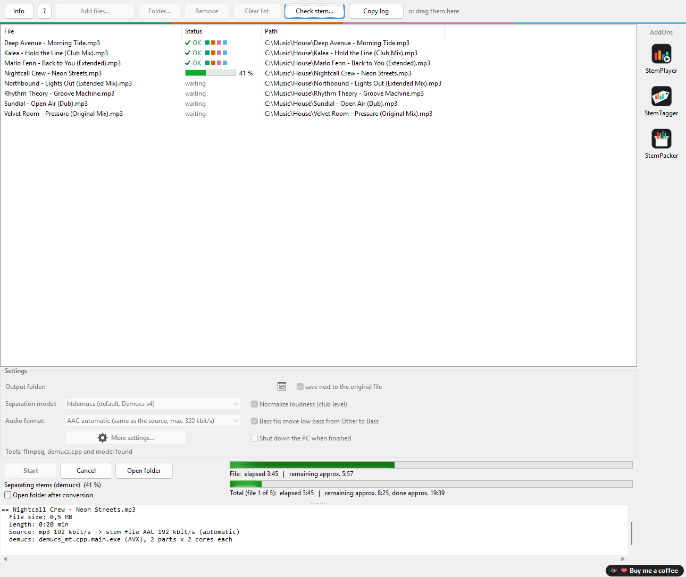
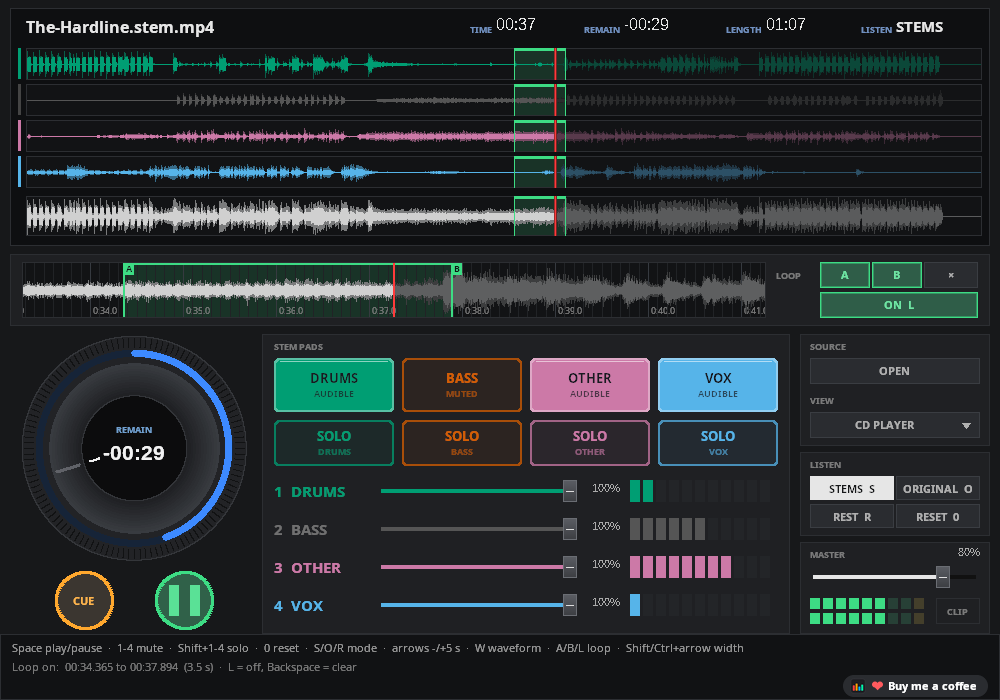

Turn your MP3s into
Traktor Stems
Splits any track into drums, bass, melody and vocals and saves a ready-to-play .stem.mp4 for Traktor and Mixxx. Free, open source, nothing to set up.
- Free & MIT licensed
- Windows 10 / 11
- Linux (beta)
- No Python, graphics card optional
- Runs locally on your PC
- Whole folders in one go

What StemMaker does
Four stems + master
Drums, bass, other (melody) and vocals in one .stem.mp4, ready for a stem deck.
Fast Turbo engine
About a minute per song on a normal CPU, seconds with a graphics card (NVIDIA, AMD, Intel).
Whole collections
Drop in folders, see the time estimate, let it run overnight. Continues after a stop or power cut.
Tags and cover kept
Title, artist, album, genre, BPM, key and cover are copied from your file.
Quality like Traktor
Demucs v4 models (htdemucs, htdemucs_ft), club level and bass fix for clean waveforms.
Nothing to install
No Python, PyTorch or CUDA, no account, no cloud. Your music never leaves the PC.
Many formats
MP3, WAV, FLAC, AIFF, M4A, AAC, OGG and Opus, up to 320 kbit/s.
Light or dark, help on F1
Follows the Windows theme; F1 opens the illustrated user guide.
Nine languages
English, Deutsch, Español, Français, Português, Italiano, 日本語, Nederlands, Polski. Spanish by David GJ.
What's new in each version: release notes.
See it in action
Add-ons included
StemPlayer
- Check stems without importing into Traktor
- Waveform per stem, mute, solo, volume
- A/B with the original, loop A-B, magnifier, scrubbing
- Three views: compact, waveform, CD player
StemTagger
- Title, artist, album, genre and cover for stem files and MP3s
- Many files at once, stems stay untouched
- Also on its own: StemTagger page
StemPacker
- Packs your own stems (DAW, 5.1, other tools) into stem files, without AI
- Also on its own: StemPacker page

Fast, even without a graphics card
One 4-minute track
Separation time with htdemucs, measured on our own PCs. A pre-test on the first start shows the time for your PC.
How it works
- Install or unzipSetup or portable ZIP, no admin rights needed.
- Drag your music inFiles or whole folders, then click Start.
- Load it in TraktorEach track becomes
Title.stem.mp4, ready for a stem deck.
StemMaker on Linux
- One AppImage with Wine built in, nothing to install
- Same version as for Windows, with all add-ons and built-in updates
- Turbo runs on the processor only for now
AppImage won't start? Install libfuse2 (Ubuntu 24.04 and newer: sudo apt install libfuse2t64).
Thanks to David GJ and ptrex for testing the Linux version.
Questions and answers
Is StemMaker really free?
Yes. StemMaker is open source under the MIT licence. There are no ads, no account and no paid version. If you like it, you can leave a voluntary donation on Ko-fi.
Which DJ software can play the stem files?
The files follow the open NI stem format (an MP4 with master plus four stems and stem metadata), the same way Stemgen builds them. Confirmed so far:
- Traktor Pro 4: tested by us, all four stems play in the Stem Decks.
- Mixxx 2.6 (currently in beta): tested by us, the files load as stems with four stem controls, names, colours and a coloured stem waveform. The stable Mixxx 2.5 cannot play stems yet.
Any other software that reads .stem.mp4 should work too.
Do I need a graphics card or Python?
No. StemMaker brings its separation engine along (ONNX Runtime, with demucs.cpp as a fallback), so there is no Python environment, no PyTorch and no CUDA driver to install and nothing that can conflict with other software on your PC. The Turbo engine runs fast on the processor alone. If you have a graphics card (NVIDIA, AMD or Intel), StemMaker tests it on the first start and uses it only if it computes correctly and faster; that part is still marked beta. You need a 64-bit Windows 10 or 11 and an internet connection on the first start for the downloads (ffmpeg approx. 56 MB, model 81 MB).
Does StemMaker run on Linux or macOS?
Linux: yes. There is an AppImage with Wine built in, so you install nothing extra (see StemMaker on Linux). It is still a beta, and there Turbo runs on the processor only. macOS: there is no version for macOS.
StemMaker, UVR5 or StemRoller: what is the difference?
All three separate music into stems with AI models. UVR5 and StemRoller save each stem as its own audio file; UVR5 offers many models and settings for the cleanest possible separation. StemMaker is made for DJs: it writes one finished .stem.mp4 per track that Traktor and Mixxx load directly as a stem file, with tags and cover, and works through whole folders on its own. If you need single WAV tracks, UVR5 or StemRoller fit better; if you want stem files for your DJ software, StemMaker saves the extra packing step.
Windows shows “Windows protected your PC”. Is that a problem?
StemMaker is not digitally signed, because signing certificates cost money every year. Click “More info” and then “Run anyway”. The full source code is on GitHub, and you can check the download on VirusTotal or build it yourself.
How good is the separation?
In our test against a stem file made by Traktor Pro 4 from the same track, StemMaker came out about level: drums, kick and vocals sounded nearly identical. Paid tools like RipX or Lalal.ai and special models in UVR5 separate even more cleanly. When you solo a stem you can sometimes hear small artifacts, as with every tool of this kind.
Traktor Pro 4 can make stems itself. Why StemMaker?
Honestly: if Traktor's own separation works for you, you don't need StemMaker. Since version 2.0 StemMaker is about as fast as Traktor 4 on the same processor, and much faster with a suitable graphics card. Traktor keeps its stems inside its own collection, though: in its Stems folder, with hashed file names, linked to the original track. StemMaker writes standalone .stem.mp4 files with readable names next to your music, so you can copy them to another laptop or a USB stick and use them with any software that reads .stem.mp4. It works through complete folders on its own, for example overnight, shows the expected time beforehand and continues after a stop or power cut. You don't need a Traktor licence for it, and it raises quiet files to club level, so the waveforms are easy to read.
Are tags and cover art carried over?
Yes: title, artist, album, genre, year, track number, BPM, key, label, ISRC and the cover are copied from the source file, so the stem file looks right in your collection straight away. Traktor replaces BPM and key with its own analysis anyway; until then, and in other programs, the values from your file are shown.
What music can I use?
StemMaker is a tool for music you own, for example tracks you bought or your own productions. Please respect the rights of the artists and only use the stem files for your own purposes.
Is there a command line version?
Yes, AddOns\StemCLI.exe does the same without a window, for batch files or the Windows Task Scheduler.
Where can I ask questions or suggest ideas?
In the GitHub Discussions. You can attach screenshots, logs and files there. Reading works without an account, writing needs a free GitHub account.
Ready to make your own stems?
Download the installer or the ZIP and drag in your first track.
StemMaker is a one-person hobby project, built in the evenings and free for good. If it saves you an evening of work, you can buy me a coffee on Ko-fi ☕ or simply give it a star on GitHub. Both are entirely optional.